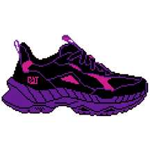
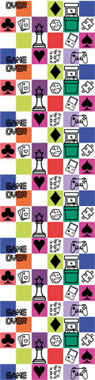

Tres ajustes para que el juego se sienta vivo y en un solo estilo
Después de probar la primera entrega dentro del juego, pedimos tres piezas nuevas. Los bocetos de esta página son pixel art a baja resolución (16 × 16) hechos solo para mostrar la dirección: no son arte final. Las medidas usan unidades de juego (u), exportadas a 3x (1 u = 3 px) salvo donde se indique. Ningún tamaño cambia respecto a la guía v1.1: el detalle en píxeles está en la sección de medidas.
Así se vería con los tres cambios
Simulación en vivo con los bocetos de esta página sobre el escenario actual del juego (cielo plano y silueta de Bogotá).
- El zapato trota en su carril y se inclina al cambiar de carril (la inclinación la hacemos en código).
- Los obstáculos son rellenos, con contorno claro, y se distinguen de la moneda amarilla a simple vista.
- Las paredes tienen motivos de juego de mesa con poco contraste, en el color de la ciudad, y un borde amarillo CAT hacia la pista.
- Todo comparte la misma cuadrícula de píxeles que el marcador y la tipografía.
A · Zapato: trote en lugar de salto
El jugador no salta: solo cambia de carril. Una animación de salto le haría creer que puede pasar por encima de los obstáculos. Un trote le da vida sin prometer algo que el juego no hace.
Hoy vs. dirección propuesta

Actual De perfil, oscuro, quietoTira de 4 cuadros (boceto)
Cuadro 1: apoyo · 2: sube · 3: punto alto · 4: baja. La suela se aplasta un píxel al apoyar.
Qué pedimos
- Cuadrícula de 36 × 36 píxeles (1 píxel = 2 u): 216 × 216 px en el juego (6 px por píxel) y 360 × 360 px en el menú (10 px por píxel).
- Vista desde atrás o en 3/4 desde atrás: se ve el talón y la suela, porque el zapato avanza hacia la ciudad.
- Animación de trote o rebote de 4 cuadros del mismo tamaño, sin espacio entre ellos. Velocidad sugerida: 10 cuadros por segundo.
- Contorno claro (blanco o gris) de al menos 2 u, para que no se pierda en el asfalto #26232B.
- Colores CAT: amarillo #FFCD11 y negro como base; el morado y el rosado actuales pueden quedar como acentos.
- Sin sombra: la agrega el juego.
- La misma animación para el menú, en grande.
B · Obstáculos: pixel art con relleno
Hoy son íconos de línea: no combinan con el resto y el choque se calcula sobre espacio vacío. Con relleno, lo que se ve es lo que choca.
Actuales (línea) vs. bocetos (relleno)
El recuadro punteado es la caja de 64 u. La parte sólida debe ocupar al menos el 70 %.
Qué pedimos
- Cuadrícula de 32 × 32 píxeles (1 píxel = 2 u), exportada a 192 × 192 px con "vecino más próximo", sin suavizado.
- Relleno sólido que ocupe al menos el 70 % de la caja, con contorno claro de 1 píxel.
- Sin amarillo: el amarillo es solo para lo que se recoge. Preferir colores de la paleta de ciudades (#E73E3F, #3E54A0, #7F4885, #00956E).
- Dos variantes por tipo: peón y torre; dado con caras 3 y 5; naipe o dominó (confirmar con el cliente cuál va).
- La misma vista que el zapato; el dominó y el naipe van de pie.
C · Paredes: simples, en gris y sin texto
Las paredes se quedan porque dan sensación de velocidad y marcan el borde de la pista, pero hoy tienen demasiado ruido. No recomendamos edificios: competirían con la silueta del horizonte y, de lado y en 40 u, no se leen.
Opciones comparadas

Actual Mucho ruido, texto ilegibleEl mismo archivo, teñido por el juego en cada ciudad
El borde amarillo del lado de la pista lo dibuja el juego, así que no hace falta incluirlo en el archivo.
Qué pedimos
- Un módulo de 40 × 160 u (120 × 480 px; cuadrícula de 20 × 80 si es pixel art) que se repita en vertical sin cortes.
- Solo blanco y grises sobre transparente: el juego lo colorea con el color de cada ciudad, así que no hacen falta 8 versiones.
- Motivos de Game Night (palos de la baraja, puntos de dado, fichas) pequeños y espaciados, con poco contraste respecto a la base.
- Sin texto ni logos, para poder reflejarlo en el lado derecho con un solo archivo.
- Si quieren un logo CAT en la pared, entregarlo aparte (máximo 32 u de ancho) y lo intercalamos cada cierto tramo.
Medidas: todo cabe en lo que ya pedía la guía
Ningún lienzo cambia respecto a Especificaciones_assets_CAT_game.docx v1.1. La pantalla mide 480 × 720 u y
1 u = 3 px. Lo único nuevo es la cuadrícula de pixel art: cada píxel del dibujo mide 2 u (el grosor mínimo que ya pedía la guía),
así que en el PNG final cada píxel del dibujo se exporta como un bloque de 6 × 6 px.
Plano de la pantalla a escala (unidades de juego)
Las esquinas punteadas (130 × 48 u) son del marcador: ahí no debe ir nada importante de la silueta.
Cómo leer la cuadrícula
Tamaño en juego ÷ tamaño del píxel del dibujo = cuadrícula. Un obstáculo de 64 u con píxeles de 2 u se dibuja en 32 × 32 píxeles.
Cuadrícula × píxeles de exportación = PNG final. 32 píxeles × 6 px = 192 px, que es exactamente lo que ya pedía la guía.
Así el pixel art queda nítido: cada píxel del dibujo cae en un número entero de píxeles de pantalla, sin bordes borrosos.
Los bocetos de esta página usan una cuadrícula más gruesa (16 × 16) solo para ilustrar; el arte final va con la cuadrícula de la tabla.
| Elemento | En juego | Cuadrícula del dibujo | 1 píxel del dibujo | PNG final | Cuadros | ¿Igual a la guía v1.1? |
|---|---|---|---|---|---|---|
| Zapato (juego) | 72 × 72 u | 36 × 36 | 2 u = 6 px | 216 × 216 px | 1 | Sí |
| Zapato trotando (juego) | 72 × 72 u c/u | 36 × 36 c/u | 2 u = 6 px | 864 × 216 px | 4 × 216 px | Sí (la guía la tenía como recomendada) |
| Zapato (menú) | 120 × 120 u | 36 × 36 | 10 px | 360 × 360 px | 1 | Sí |
| Zapato trotando (menú) | 120 × 120 u c/u | 36 × 36 c/u | 10 px | 1440 × 360 px | 4 × 360 px | Nuevo archivo, mismo tamaño de cuadro |
| Obstáculo (cada variante) | 64 × 64 u | 32 × 32 | 2 u = 6 px | 192 × 192 px | 1 | Sí |
| Parte sólida del obstáculo | ≥ 45 × 45 u | ≥ 22 × 22 | — | ≥ 134 × 134 px | — | Sí (70 % de cada lado de la caja: es el cuadrado con el que el juego calcula el choque) |
| Contorno claro | 2 u | 1 píxel | 2 u = 6 px | 6 px de grosor | — | Sí (grosor mínimo) |
| Módulo de pared | 40 × 160 u | 20 × 80 | 2 u = 6 px | 120 × 480 px | 1 | Sí (ahora en grises) |
| Motivo dentro de la pared | ≤ 16 × 16 u | ≤ 8 × 8 | 2 u = 6 px | ≤ 48 × 48 px | — | Nuevo detalle |
| Borde amarillo de la pared | 3 u | — | — | no se entrega | — | Lo dibuja el juego |
| Logo para la pared (opcional) | ≤ 32 × 32 u | ≤ 16 × 16 | 2 u = 6 px | ≤ 96 × 96 px | 1 | Sí |
| CATCOIN (sin cambios) | 32 × 32 u | 16 × 16 | 2 u = 6 px | 96 × 96 px | 1 (giro opcional: 8) | Sí |
| Silueta de ciudad (sin cambios) | 480 × 200 u | vectorial | línea ≥ 2 u = 8 px | 1920 × 800 px (4x) | 1 | Sí |
Archivos a entregar
Nombres en minúsculas, sin tildes ni espacios. PNG de 32 bits con transparencia; SVG opcional si el arte es vectorial.
| Archivo | Tamaño | Contenido | Prioridad |
|---|---|---|---|
| jugador@3x.png | 216 × 216 | Zapato quieto, vista desde atrás · cuadrícula 36 × 36 | Obligatorio |
| jugador_trote@3x.png | 864 × 216 | Tira de 4 cuadros de 216 × 216 px, sin espacio entre ellos | Obligatorio |
| jugador_menu_trote.png | 1440 × 360 | La misma tira para el menú: 4 cuadros de 360 × 360 px | Obligatorio |
| obstaculo_ajedrez_01@3x.png / _02 | 192 × 192 | Peón y torre, cuadrícula de 32 × 32 | Obligatorio |
| obstaculo_dado_01@3x.png / _02 | 192 × 192 | Dado con caras 3 y 5 · cuadrícula 32 × 32 | Obligatorio |
| obstaculo_naipe_01@3x.png / _02 o obstaculo_domino_01@3x.png / _02 | 192 × 192 | Según lo que confirme el cliente, de pie · cuadrícula 32 × 32 | Obligatorio |
| pared@3x.png | 120 × 480 | Módulo repetible, blanco y grises sobre transparente · cuadrícula 20 × 80 | Obligatorio |
| pared_logo@3x.png | ≤ 96 × 96 | Logo para intercalar en la pared | Opcional |
Pendientes de la ronda 1
logo_cat_blanco.svgcon tinta blanca y fondo transparente (el entregado trae recuadro blanco), máslogo_cat_negro.svgy los PNG de 720 px.- Siluetas de ciudad con líneas de al menos 2 u y la base apoyada en el borde inferior del lienzo.
- Exportar todo al tamaño exacto pedido (llegó a 9x en vez de 3x).